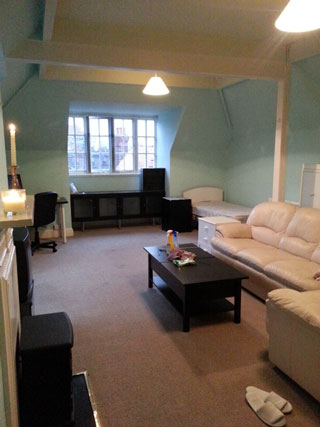
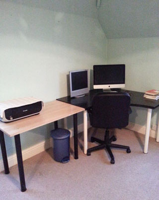
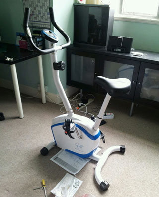
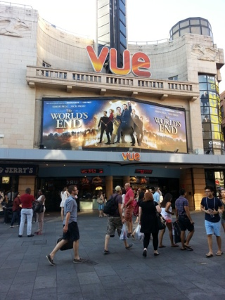

1.이사
7월초 이사했다
옆방으로 ㅡㅡ;;;;;
현재 살고있는집이 회사가기 편해서
딱히 이사갈마음은 없었는데
빛이 잘 안들어오는 방이 불만이었음
그러던 와중 옆방사람이 나가서 잽싸게 바꿨다 ㅎㅎ
황당하게 큰 방사이즈 ㅡㅡ;;;
하루종일 열심히 닦고 짐 들여놓기전에 찍어봤당
소파랑 테이블이 있어서 누워서 훼인짓 하기 딱좋다
이거때문에 그동안 징하게 안사고 버팅기던 노트북을 사네마네
한참 난리를 치고있었는데
(주변사람들에게 "지금방이 소파있어서 노트북에 미드틀어놓고
훼인짓하기 딱 좋단말이야아아아~~ 노트북이 필요해에에"
이런소릴 해가며 ㅡㅡ;;;;)
혹시나 해서 켜본 5년도 넘은 - 전에 갑자기 전원이 나가서 사망한줄 알고
이제껏 방치해둔 - 노트북이 돌아간다 ㅡㅡ;;
한 6개월 쉬게 해줬더니 얘가 다시 돌아갈 마음이 생겼나^^;;;
우히히 여튼 노트북 안사도 되네 아이씐나
워킹데드 보고있는중 ㅎㅎㅎㅎ
회사 K느님이
워킹데드 / 왕좌의게임 / breaking bad
아직 안봤다니까
넌 도대체 인생을 뭐하고 사는거야아아아
이러면서 마구 추천을 날려주셨음 ㅋㅋㅋㅋㅋㅋ

2. 그리고 엄마님이 선사하신 헬스자전거
20분도 채 못가서 헥헥거린다 ㅡㅡ;;
게다가 요즘 날이 더워서 자전거 타는데 넘 힘들어;;;;
(세상에 영국에서 비오는날을 기다리게 될줄은ㅡㅡ;;;)
부지런히 타서 즈질체력좀 어떻게 해야제^^;;;;
+
죠~뒤에 그동안 사네마네 했던
소니 알람+아이팟터치용 dock도 이번에 구입
왜 진작 안샀지 싶을정도로 매우 만족중^^
아침저녁 classic FM틀어놓는다 ㅎㅎㅎ
sleep기능이랑 라디오 알람 느므 좋다 ㅜㅜ

3.토요일
The World's End 봤당
이번영화는 So English / So Crazy 임 ㅋㅋㅋ
이거 영국 펍문화 모르는사람은 잘 안먹힐거 같은데
라는 쓰잘데기없는 걱정을 했다^^;;;
낄낄거리면서 잼나게 봤어요 ㅎㅎㅎ
4.Tickets
한참 막바지 세일중인데
있는것도 -안입는옷/신발- 이베이에 내다팔아야 할 상황이라
옷은 그닥 안샀는데 그대신 티켓지름신이 오셨다 ㅡㅡ;;;
(진정 지름총량의 법칙인가;; 옷을안사니까 다른걸사 ㅋㅋㅋㅋ)
이틀만에 총 5장 구입 ㅡㅡ;;;;;
West Side Story / Primal Scream / Placebo / Swan Lake reloaded / Martin Grech
앞 세장은 원래 가려했던거구
Swan Laek Reloaded는 우연히 본 포스터(↑)
언니의 가죽부츠가 넘 멋져서(....;;) 충동구매
그리고 헐~ 한방에 4장 질러보긴 처음이야 ㅋㅋㅋ 이러고 있는데
새벽1시쯤 잠들락 말락할때 M군에게
이거 가야해해에에에에에에!!!! 라고 연락와서
얼떨결(?)에 가게된 Martin Grech ㅋㅋㅋㅋ
이로서
8월 - West Side Story / Swan Lake
10월 - HIM
11월 - Martin Grech / Depeche Mode
12월 - Primal Scream / Placebo
라는 굉장히 훌륭한(....) 하반기 스케쥴이 완성되었음
달력에표시해 놓고 보고만 있어도 뿌듯하다^^;;;;;
11월 Gary Numan은 가고싶은데 갈꺼같구(←;;;;)
Alice in Chains은 가고싶은데 못갈꺼같은(←;;;;)
그리고 1월에 매튜본씨 Swan Lake만 보면 매우 바람직함^^**
고럼 요거기다리면서 성실히 로동!! ㅎㅎㅎ